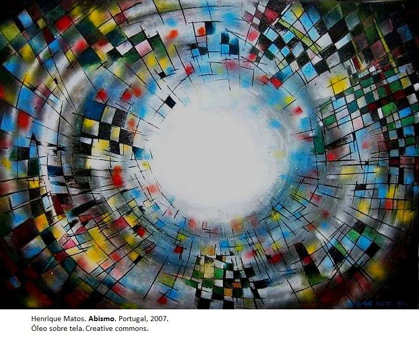
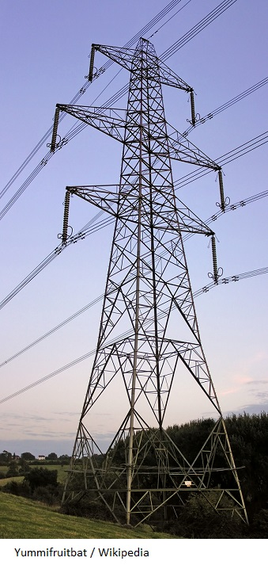
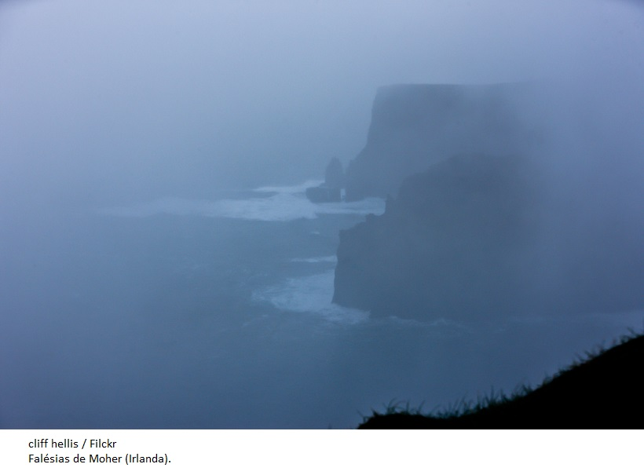

O que é imagem visual?
-
A palavra grega eikon, cuja tradução é ícone, abarcava todos os tipos de imagem visual, desde pinturas até estampas de selo, assim como imagens sombreadas e espelhadas. Sombras e espelhos eram considerados naturais, enquanto as imagens produzidas pelo ser humano eram tidas como artificiais.
Isso nos dá uma amostra de que, mesmo quando restringimos a palavra imagem apenas ao seu sentido visual, ela já é suficientemente diversa, podendo se referir tanto a imagens perceptivas como a todas as formas de representação visual criadas pelo ser humano: desenho, pintura, gravura, fotografia, escultura, holografia e imagens produzidas computacionalmente, estas também chamadas de imagens infográficas.
-
Como podemos, então, definir imagem? Uma das definições mais antigas encontra-se no livro VI da obra A república, de Platão. Para esse filósofo, imagens, em primeiro lugar, são as sombras, depois os reflexos que vemos na água ou na superfície de corpos opacos, polidos, brilhantes e todas as representações desse gênero.
Essas eram as imagens tidas como naturais, que Platão privilegiou em detrimento das imagens chamadas artificiais. Quaisquer que sejam, naturais ou artificiais, todas as imagens têm algo em comum, o que nos permite defini-las como duplos, quer dizer, elas reproduzem características reconhecíveis do mundo visível.
-
Certamente, existem imagens denominadas abstratas porque não funcionam como duplos, ou seja, elas valem por si e em si mesmas, sem pretender imitar algo visível que está fora delas.
Nesse caso, a imagem apresenta características muito próximas da música. Mas fiquemos, por ora, nas imagens que, de fato, funcionam como duplos. Para entender por que são duplos, é preciso considerar outro tipo de imagem visual que também não é um duplo, a saber, as imagens perceptivas.
-
Nós, humanos, somos dotados de um aparelho visual extremamente sofisticado: os olhos. Olhamos para o mundo, e este nos aparece como imagem. São os olhos e o cérebro que dão conta dessa proeza. O mundo lá fora se disponibiliza a nós, e o equipamento sensório de que fomos dotados configura um campo visual em que tudo aparece sob a espécie da imagem: próxima, distante, nítida, indistinta, turva etc.
-
-

-

Diferentemente das imagens perceptivas, que se apresentam a nós em razão da própria natureza de que somos feitos, as imagens produzidas pelo ser humano dependem de materiais como suportes (parede, tela etc.), instrumentos (lápis, pincel, câmera, computador), técnicas, habilidades e talentos, por exemplo para desenhar, pintar, fotografar etc.
-
Em meio à diversidade implícita nos vários territórios da imagem, interessa-nos aqui explorar o campo da imagem como representação. As imagens são chamadas de representações porque são criadas e produzidas pelos seres humanos nas sociedades em que vivem. É claro que elas são também imagens percebidas, mas distinguem-se das perceptivas porque, nesse caso, é a nossa percepção que faz o mundo visível aparecer naturalmente a nós como imagem, enquanto as representações visuais são artificialmente criadas, necessitando para isso de materialidades e mediações. São essas as imagens mais adequadas a este Especial, que tem por objetivo auxiliar os professores a conduzir seus alunos na leitura da imagem, pois imagens também se leem.